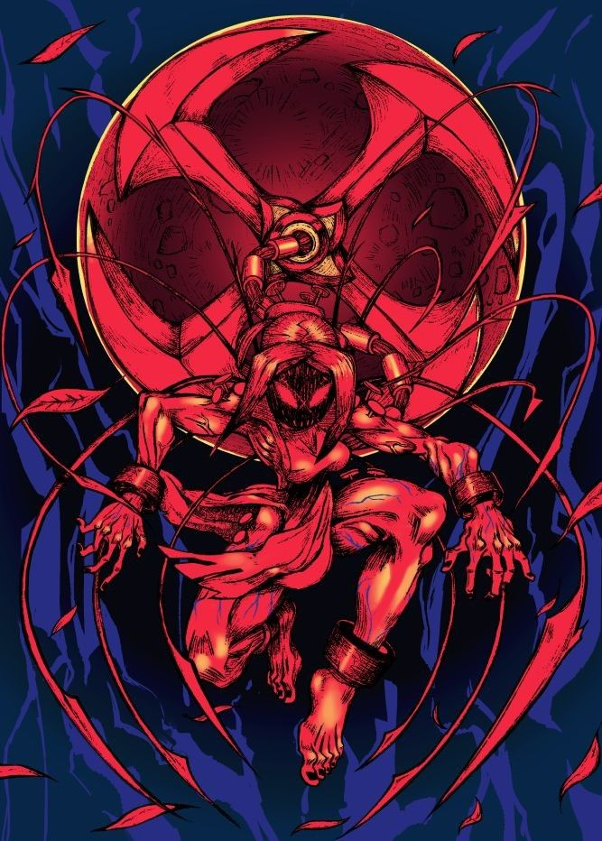

-- Not Yet Condemned --

Mini-Biography
Painwheel (JP: ペインホイール Peinhoīru) was once a school girl named Carol (JP: キャロル Kyaroru) before she was kidnapped and transformed into an Anti-Skullgirl weapon by Valentine and Brain Drain.
Painwheel Gameplay